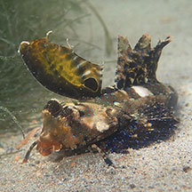
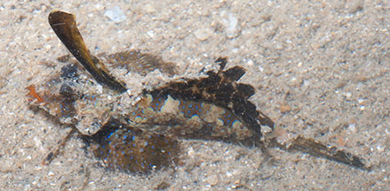
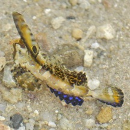

|
|
| fishes text index | photo index |
| Phylum Chordata > Subphylum Vertebrate > fishes > Family Callionymidae |
| Kuiter's
dragonet Dactylopus kuiteri Family Callionymidae updated Sep 2020 Where seen? This little curious fish with a flag on its back is sometimes seen on some of our Southern shores. Elsewhere, they are considered common on shallow shetltered mud-sand flats, especially among seagrasses. Also in estuaries and deep water. They are usually buried during the day. Juveniles usually seen alone, adults may be seen in pairs or small groups. Features: Those seen on the intertidal about 2-3cm, grows to 15cm long. A portion of the dorsal fin is large and flag-like, which can be raised like a finger. The pelvic fins which are fan-like with the first ray detached from the rest of the fin. Body cylindrical and not very flat, pale with brown saddles which have bright bluish spots. Head broad and flat with a narrow pointed mouth so that the head appears triangular when seen from above. Fins dark, anal fins with bright blue spots. According to Kelvin Lim, juveniles have proportionally taller dorsal fins with a prominent yellow edged eye-spot on the first dorsal fin. Small juveniles around 2 cm are white with orange bars on the head and nape. Sometimes confused with the Fingered dragonet (Dactylopus dactylopus). Both Fingered and Kuiter's dragonets have the first pelvic fin ray separated from the rest of the pelvic fin. The fingered dragonet differs in having long filamentous rays on the first dorsal fin and distinct stripes on the second dorsal fin. Sometimes mistaken for flatheads (Family Platycephalidae). Here's more on how to tell apart fish with flat heads. |
 Terumbu Pempang Laut, May 17 Photo shared by Toh Chay Hoon on facebook. |
 Kusu Island, May 14 |
| What does it eat? It feeds on
molluscs, worms and crustaceans. Human uses: May be harvested for the aquarium trade. |
| Kuiter's dragonets on Singapore shores |
On wildsingapore
flickr
|
| Other sightings on Singapore shores |
 Cyrene Reef, May 11 Photo shared by Rene Ong on facebook. |
|
Pretty dragonet fish at Cyrene Reef from Loh Kok Sheng on Vimeo. |
Links
References
|